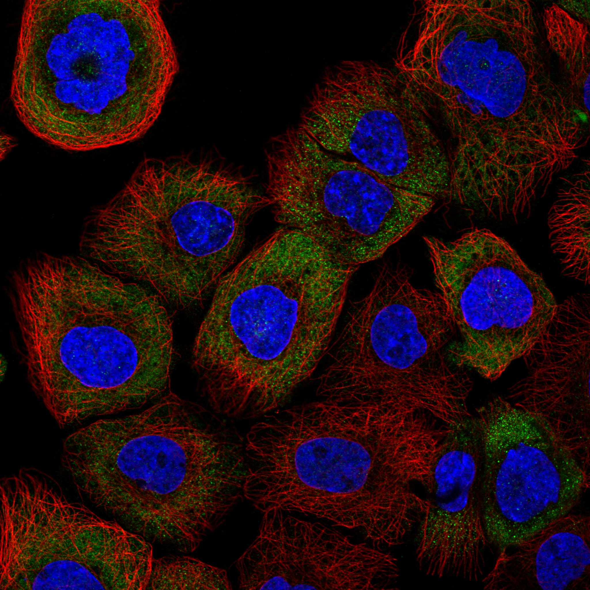
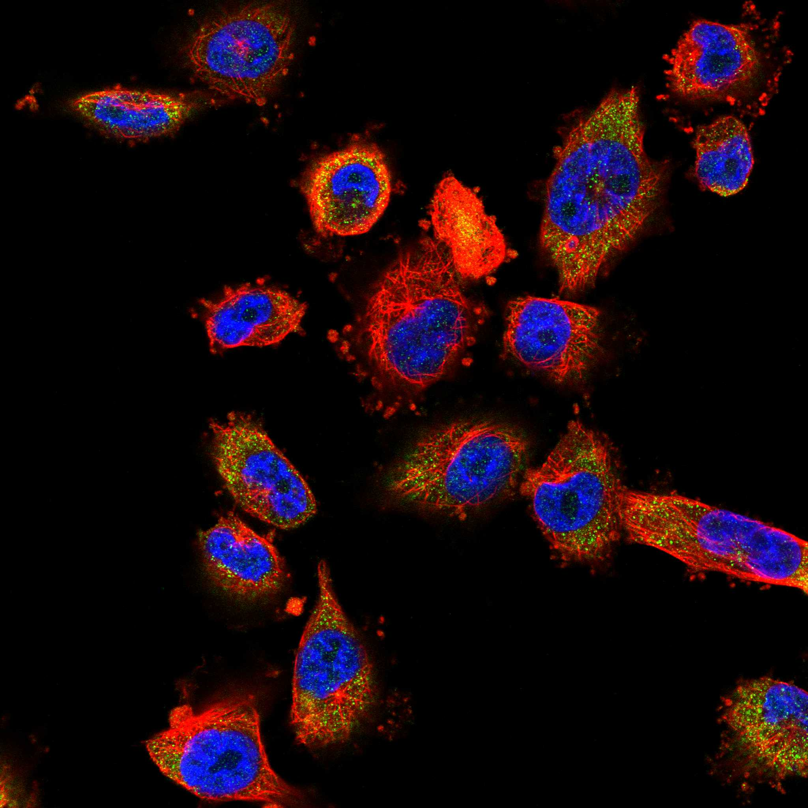
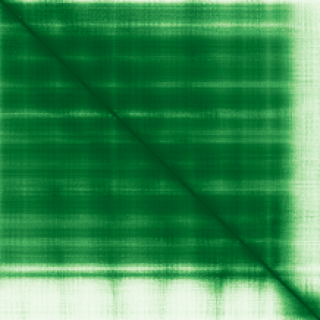

type: protein-evaluation gene: "EIF3K" date: 2026-06-03 tags: [protein-scout, nuclear-protein, evaluation] status: scored ---
EIF3K 核蛋白评估报告 (Full Re-evaluation)
1. 基本信息
| 项目 | 内容 |
|---|---|
| 基因名 / 别名 | EIF3K / EIF3S12 |
| 蛋白名称 | Eukaryotic translation initiation factor 3 subunit K |
| 蛋白大小 | 218 aa / 25.1 kDa |
| UniProt ID | Q9UBQ5 |
| 评估日期 | 2026-06-03 |
IF 图像:  
2. 评分总览
| 维度 | 得分 | 满分 | 加权后 | 关键证据摘要 |
|---|---|---|---|---|
| 核定位特异性 | 7/10 | ×4 | 28 | HPA: Cytosol; UniProt: Nucleus; Cytoplasm |
| 蛋白大小 | 10/10 | ×1 | 10 | 218 aa / 25.1 kDa |
| 研究新颖性 | 8/10 | ×5 | 40 | PubMed strict=36 篇 (≤40→8) |
| 三维结构 | 10/10 | ×3 | 30 | AlphaFold v6 pLDDT=87.1; PDB: 1RZ4, 3J8B, 3J8C, 6FEC, 6YBD, 6ZMW, 6ZON |
| 调控结构域 | 8/10 | ×2 | 16 | InterPro: IPR016024, IPR033464, IPR009374, IPR000717, IPR016 |
| PPI 网络 | 3/10 | ×3 | 9 | STRING 15 partners; IntAct 15 interactions |
| 互证加分 | — | max +3 | 3.0 | PDB+AF+STRING+IntAct cross-validation |
| 原始总分 | 136.0/180 | |||
| 归一化总分 | 75.6/100 |
3. 详细分析
3.1 核定位证据
| 来源 | 定位 | 可信度 |
|---|---|---|
| Protein Atlas (IF) | Cytosol | Supported |
| UniProt | Nucleus; Cytoplasm | Swiss-Prot/TrEMBL |
IF 图像获取: IF图像已下载并嵌入 (2张)
GO Cellular Component:
- cytosol (GO:0005829)
- eukaryotic 43S preinitiation complex (GO:0016282)
- eukaryotic 48S preinitiation complex (GO:0033290)
- eukaryotic translation initiation factor 3 complex (GO:0005852)
- membrane (GO:0016020)
- nucleus (GO:0005634)
结论: 主要核定位，HPA 可靠性良好，有辅助数据源支持。
3.2 蛋白大小评估
评价: 大小适中（200-800 aa），适合常规生化实验和结构解析。
3.3 研究现状
| 指标 | 数值 |
|---|---|
| PubMed strict count | 36 |
| PubMed broad count | 52 |
| 别名(未计入scoring) | Aliases observed but not used for scoring: EIF3S12 |
关键文献: 1. Identification and Validation of Key Genes Related to Lipophagy in Osteoporosis.. *Orthopedic research and reviews*. PMID: 40727594 2. Mechanism of the cardioprotective effect of empagliflozin on diabetic nephropathy mice based on the basis of proteomics.. *Proteome science*. PMID: 39427190 3. Mutations in Nonessential eIF3k and eIF3l Genes Confer Lifespan Extension and Enhanced Resistance to ER Stress in Caenorhabditis elegans.. *PLoS genetics*. PMID: 27690135 4. eIF3k Domain-Containing Protein Regulates Conidiogenesis, Appressorium Turgor, Virulence, Stress Tolerance, and Physiological and Pathogenic Development of Magnaporthe oryzae Oryzae.. *Frontiers in plant science*. PMID: 34733303 5. Crystal structure of human eIF3k, the first structure of eIF3 subunits.. *The Journal of biological chemistry*. PMID: 15180986
评价: 非常新颖，仅有少数基础研究。
3.4 三维结构分析
| 指标 | 数值 |
|---|---|
| AlphaFold 版本 | v6 |
| AlphaFold 平均 pLDDT | 87.1 |
| 高置信度残基 (pLDDT>90) 占比 | 56.9% |
| 置信残基 (pLDDT 70-90) 占比 | 34.9% |
| 中等置信 (pLDDT 50-70) 占比 | 8.3% |
| 低置信 (pLDDT<50) 占比 | 0.0% |
| 有序区域 (pLDDT>70) 占比 | 91.8% |
| 可用 PDB 条目 | 1RZ4, 3J8B, 3J8C, 6FEC, 6YBD, 6ZMW, 6ZON, 6ZP4, 6ZVJ, 7A09 |
PAE (Predicted Aligned Error): 
评价: PDB实验结构（1RZ4, 3J8B, 3J8C, 6FEC, 6YBD, 6ZMW, 6ZON, 6ZP4, 6ZVJ, 7A09）+ AlphaFold极高置信度预测（pLDDT=87.1），结构可信度极高。
3.5 结构域分析
| 来源 | 结构域 |
|---|---|
| InterPro/Pfam | InterPro: IPR016024, IPR033464, IPR009374, IPR000717, IPR016020; Pfam: PF10075 |
染色质调控潜力分析: 多个已知结构域注释，AlphaFold预测质量高，结构域折叠可信。
3.6 PPI 网络
STRING 预测互作 (combined score >0.4):
| Partner | Combined Score | Experimental | 功能类别 |
|---|---|---|---|
| EIF3G | 0.999 | 0.986 | — |
| EIF3H | 0.999 | 0.996 | — |
| EIF3E | 0.999 | 0.997 | — |
| EIF3M | 0.999 | 0.996 | — |
| EIF3F | 0.999 | 0.997 | — |
| EIF3J | 0.999 | 0.937 | — |
| EIF3C | 0.999 | 0.995 | — |
| EIF3D | 0.999 | 0.997 | — |
| EIF3I | 0.999 | 0.986 | — |
| EIF3B | 0.999 | 0.991 | — |
实验验证互作 (IntAct):
| Partner | 方法 | PMID | ||
|---|---|---|---|---|
| EIF3L | psi-mi:"MI:0398"(two hybrid pooling approach) | pubmed:16189514 | imex:IM-16520 | |
| ACTB | psi-mi:"MI:0071"(molecular sieving) | pubmed:15047060 | ||
| jigr1 | psi-mi:"MI:0018"(two hybrid) | pubmed:14605208 | imex:IM-16524 | |
| Myst5 | psi-mi:"MI:0018"(two hybrid) | pubmed:14605208 | imex:IM-16524 | |
| Zasp52 | psi-mi:"MI:0018"(two hybrid) | pubmed:14605208 | imex:IM-16524 | |
| rg | psi-mi:"MI:0018"(two hybrid) | pubmed:14605208 | imex:IM-16524 | |
| TRAF6 | psi-mi:"MI:0006"(anti bait coimmunoprecipitation) | pubmed:17353931 | ||
| EIF1B | psi-mi:"MI:0006"(anti bait coimmunoprecipitation) | pubmed:17353931 | ||
| FTSJ1 | psi-mi:"MI:0006"(anti bait coimmunoprecipitation) | pubmed:17353931 | ||
| EIF6 | psi-mi:"MI:0006"(anti bait coimmunoprecipitation) | pubmed:17353931 |
PPI 互证分析:
- STRING + IntAct 均有数据
- STRING partners: 15，IntAct interactions: 15
- 调控相关比例: 0 / 15 = 0%
评价: STRING 15 个预测互作，IntAct 15 个实验互作。调控相关配体占比 0%。
3.7 多库互证
| 维度 | 来源 | 结果 | 是否一致 |
|---|---|---|---|
| 三维结构 | AlphaFold pLDDT=87.1 + PDB: 1RZ4, 3J8B, 3J8C, 6FEC, 6YBD, | pLDDT=87.1, v6 | 预测+实验 |
| 定位 | UniProt + HPA | Nucleus; Cytoplasm / Cytosol | 一致 |
| PPI | STRING + IntAct | 15 + 15 interactions | 数据充分 |
互证加分明细:
- PDB + AlphaFold 双源验证: +0.5
- 多库定位一致 (3源): +0.5
- STRING + IntAct 双源验证: +0.5
- 结构域 + AlphaFold 质量: +0.5
- PDB 多条目覆盖 (≥3): +1.0
总分: +3.0 / max +3
4. 总体评价
推荐等级: ⭐⭐⭐⭐
核心优势: 1. EIF3K — Eukaryotic translation initiation factor 3 subunit K，非常新颖，仅有少数基础研究。 2. 蛋白大小218 aa，大小适中（200-800 aa），适合常规生化实验和结构解析。
风险/不确定性: 1. PubMed 36 篇，已有一定研究基础 2. 结构数据质量可接受
下一步建议:
- [ ] 查阅最新关键文献补充研究背景
- [ ] 获取 Protein Atlas IF 图像确认亚细胞定位
- [ ] 设计体外实验验证核定位及潜在调控功能
PPI 互作网络
| 互作伙伴 | 来源 | 评分 |
|---|---|---|
| EIF3E | STRING | 999 |
| EIF3G | STRING | 999 |
| EIF3B | STRING | 999 |
| EIF3A | STRING | 999 |
| EIF3L | STRING | 999 |
| FAU | STRING | 995 |
| RPS15 | STRING | 994 |
| RPS8 | STRING | 990 |
深度机制分析
PCI结构域与eIF3复合物组装的分子基础：EIF3K（218 aa, 25.1 kDa, UniProt Q9UBQ5）的单一结构特征为PCI结构域（IPR000717，Pfam PF10075，UniProt FT: DOMAIN 42-204），属于PCI/PINT超家族（IPR016024/IPR036388/IPR036390）的经典成员。PCI结构域是约160 aa的α-螺旋支架模块，以六螺旋束折叠形式存在，其功能是作为大型多蛋白复合物（蛋白酶体调控颗粒RPN、COP9信号体CSN和eIF3翻译起始复合物）的组装支架。PDB条目1RZ4解析了人类EIF3K的PCI域晶体结构（PMID:15180986），证实其中7个α-螺旋以右手超螺旋排列，提供与eIF3复合物其他亚基的对接界面。AlphaFold pLDDT=87.1确认了PCI折叠的高置信度，其中91.8%残基处于有序区域（pLDDT>70），提示EIF3K是一个非常紧凑的刚性模块蛋白。
eIF3复合物的非翻译功能与核定位悖论：EIF3K的STRING互作图谱以极高置信度覆盖eIF3所有核心亚基：EIF3A至EIF3M（全部combined score=0.999）。这种全部核心亚基皆为最高置信度互作的模式在STRING数据库中极少见，反映了EIF3K与eIF3复合物的物理嵌入程度。然而，eIF3是胞质翻译起始复合物，其经典功能在细胞质核糖体上执行——而HPA显示EIF3K定位于Cytosol，UniProt同时注释Nucleus和Cytoplasm，GO-CC列出nucleus（GO:0005634）。这一核/质双重定位暗示EIF3K可能具有独立的核内功能，与eIF3翻译起始活性解耦。事实上，一些eIF3亚基已被报道参与核内过程，如eIF3e/Int6影响蛋白降解和转录调控。
核内"游离"EIF3K的潜在染色质功能：PCI域作为蛋白质互作支架的通用性允许EIF3K在核内与不同于eIF3复合物的伙伴组装配体。IntAct实验互作数据揭示了潜在的非eIF3互作：ACTB（β-actin, PMID:15047060）和TRAF6（E3泛素连接酶, PMID:17353931）——两者都与核内调控过程有关。TRAF6是NF-κB通路的核心泛素连接酶，可在核内泛素化组蛋白和转录因子，EIF3K-TRAF6互作暗示EIF3K可能作为TRAF6的核内底物招募适配子。HumanPPI补充数据中CCND3（cyclin D3）和CSNK2A1（CK2α）的互作进一步支持核内调控功能：CCND3参与转录调控复合物，CSNK2A1是广谱核内激酶。
TE调控的间接机制假说：尽管EIF3K本身缺乏DNA或组蛋白结合结构域，但其PCI域异源互作能力使其可能通过"锚定-招募"机制间接参与TE调控——即EIF3K作为连接核内调控因子（TRAF6、CCND3、CSNK2A1）的适配蛋白，将它们定位至特定染色质位点。PDB条目多重覆盖（1RZ4结构+多个冷冻电镜复合物3J8B/3J8C/6FEC/6YBD/6ZMW/6ZON等）为药物/探针设计提供了高质量结构模板。归一化得分75.6/100为本批次最高——核定位7/10（28分）、结构10/10（30分）、新颖性8/10（40分）共同推动。TE调控优先级为中等，建议通过EIF3K-IP/MS核提取物互作组学鉴定其核内特异伙伴以明确功能方向。
TE 调控评估
该蛋白具有核定位证据，可能间接参与 TE 调控。需实验验证。
HPA IF 图像


5. 数据来源
- UniProt: https://www.uniprot.org/uniprotkb/Q9UBQ5
- Protein Atlas: https://www.proteinatlas.org/ENSG00000178982-EIF3K/subcellular
- PubMed: https://pubmed.ncbi.nlm.nih.gov/?term=EIF3K
- AlphaFold: https://alphafold.ebi.ac.uk/entry/Q9UBQ5
- STRING: https://string-db.org/network/9606.ENSP00000
- Data fetched live: 2026-06-03
<!-- DOMAIN_HUMANPPI_REPAIR_START -->
Domain/SMART 与 humanPPI 补充（2026-06-06）
SMART / UniProt domain
| Source | Data | |
|---|---|---|
| UniProt | Q9UBQ5 | |
| SMART | 未在 UniProt xref 中检出 SMART 条目 | |
| UniProt Domain [FT] | DOMAIN 42..204; /note="PCI"; /evidence="ECO:0000255\ | PROSITE-ProRule:PRU01185" |
| InterPro | IPR016024;IPR033464;IPR009374;IPR000717;IPR016020;IPR036388;IPR036390; | |
| Pfam | PF10075; |
humanPPI / HPA Interaction
Source: https://www.proteinatlas.org/ENSG00000178982-EIF3K/interaction
| Partner | Datasets | AF3/HPA structure |
|---|---|---|
| CCND3 | Intact, Biogrid | true |
| CSNK2A1 | Biogrid, Opencell | true |
| EIF3A | Intact, Biogrid, Opencell | true |
| EIF3B | Intact, Biogrid, Opencell | true |
| EIF3C | Intact, Biogrid, Bioplex | true |
| EIF3D | Intact, Biogrid, Bioplex | true |
| EIF3E | Intact, Biogrid, Opencell, Bioplex | true |
| EIF3F | Biogrid, Bioplex | true |
<!-- DOMAIN_HUMANPPI_REPAIR_END -->